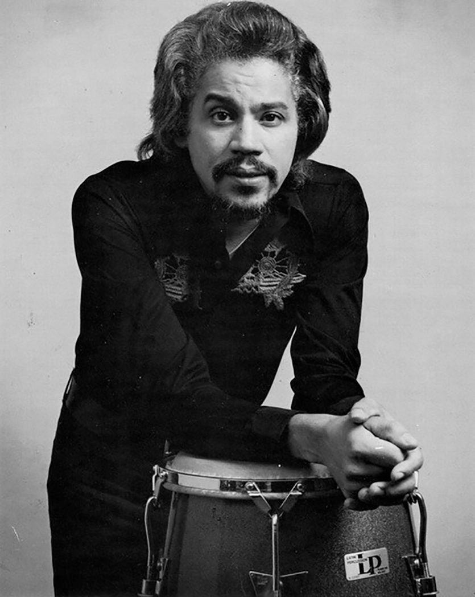
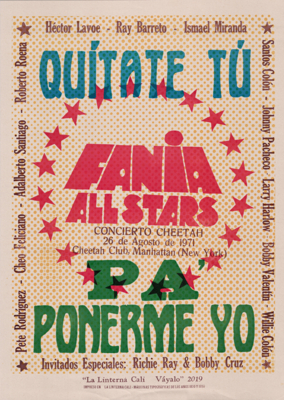

A finales de los años sesenta, Fania Records empezó a consolidarse como una plataforma para músicos que representaban distintas vertientes de la nueva música latina. Fundado por Johnny Pacheco y Jerry Masucci, el sello reunió a artistas con estilos, trayectorias y públicos propios. La creación de Fania All-Stars permitió convertir esa diversidad en una agrupación colectiva que reunía a figuras de su catálogo.
La idea tenía una dimensión musical y otra estratégica: demostrar que aquellos intérpretes podían funcionar como una fuerza común. Bajo la dirección musical de Pacheco, voces, trombones, trompetas, piano y percusión se unieron para construir un sonido poderoso, arraigado en la tradición caribeña y adaptado a la energía de Nueva York.
La agrupación ya se había presentado en el Red Garter en 1968. Sin embargo, el concierto del Cheetah Club en 1971 sería el momento que consolidaría su proyección.

El 26 de agosto de 1971, el Cheetah Club de Manhattan recibió a Fania All-Stars para una presentación que se convertiría en uno de los momentos más recordados de la salsa neoyorquina. Aquella noche, una constelación de músicos compartió escenario ante un público que respondió a la fuerza de los ritmos, los coros y la improvisación.
Johnny Pacheco dirigía musicalmente a un conjunto que incluía a Héctor Lavoe, Cheo Feliciano, Ismael Miranda, Adalberto Santiago, Willie Colón, Larry Harlow, Ray Barretto, Bobby Valentín y Roberto Roena, entre otros. Cada artista aportaba su personalidad, pero el concierto mostraba cómo podían integrarse en una experiencia común.
La presentación quedó registrada en grabaciones en vivo que se publicaron en álbumes y en imágenes que después formarían parte del documental Our Latin Thing (Nuestra cosa latina), estrenado en 1972. La cámara no solo documentó una actuación: conservó fragmentos de la escena latina de Nueva York, sus músicos y su público.
El impacto del Cheetah no terminó cuando se apagaron las luces del club. Las grabaciones en vivo y el documental Our Latin Thing llevaron la energía de aquella escena a nuevos públicos y ayudaron a consolidar la imagen de la salsa como expresión de la cultura latina urbana.
La música de Fania combinaba tradiciones afrocubanas y caribeñas con arreglos modernos, improvisación y letras que hablaban de la calle, las relaciones humanas, las dificultades cotidianas y el orgullo de pertenecer a una comunidad. Para muchos latinos en Estados Unidos, la salsa ofrecía una manera de reconocerse en una cultura que no siempre les daba suficiente espacio.
La expansión continuó con grandes presentaciones, como el concierto de Fania All-Stars en el Yankee Stadium en 1973. Durante los años siguientes, el sello amplió su catálogo y su alcance internacional, con artistas como Celia Cruz y Rubén Blades entre las figuras asociadas a su crecimiento.
